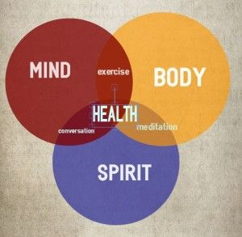
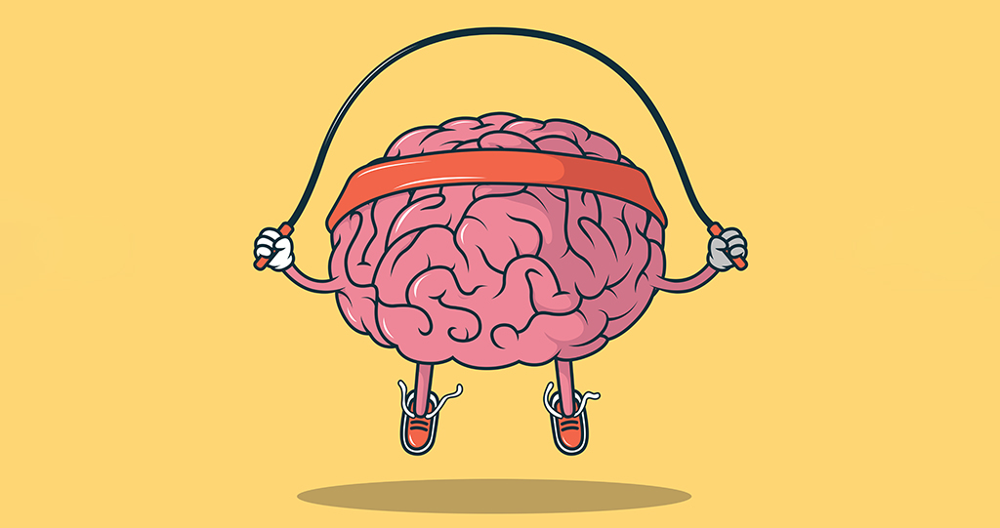

Ways to lead a Healthy Lifestyle

- 1. Give time to yourself
- Treat yourself with kindness and respect, and avoid self-criticism. Make time for your hobbies and favorite projects, or broaden your horizons. Do a daily crossword puzzle, plant a garden, take dance lessons, learn to play an instrument or become fluent in another language.
- 2. Take care of yout body
-
Taking care of yourself physically can improve your mental health. Be sure to:
- Eat Nutritious meal
- Avoid Smoking
- Drink Plenty of Water
- De exercise and meditaion which will help to decrease stress and anxiety
- Get enough sleep. Lack of sleep may cause depression
- 3. Surround yourself with good People
- People with strong family or social connections are generally healthier than those who lack a support network. Make plans with supportive family members and friends, or seek out activities where you can meet new people, such as a club, class or support group.
- 4. Learn to Deal with Stress
- Like it or not, stress is a part of life. Practice good coping skills: Try One-Minute Stress Strategies, do Tai Chi, exercise, yoga, take a nature walk, play with your pet or try journal writing as a stress reducer. Also, remember to smile and see the humor in life. Research shows that laughter can boost your immune system, ease pain, relax your body and reduce stress.
- 5. Keep your Mind Calm
- Try meditating, Mindfulness and/or prayer. Relaxation exercises and prayer can improve your state of mind and outlook on life. In fact, research shows that meditation may help you feel calm and enhance the effects of therapy.
- 6. Set realestic goals
- Decide what you want to achieve academically, professionally and personally, and write down the steps you need to realize your goals. Aim high, but be realistic and don't over-schedule. You'll enjoy a tremendous sense of accomplishment and self-worth as you progress toward your goal. Wellness Coaching, can help you develop goals and stay on track.
- 7. Break up the Monotony
- Although our routines make us more efficient and enhance our feelings of security and safety, a little change of pace can perk up a tedious schedule. Alter your jogging route, plan a road-trip, take a walk in a different park, hang some new pictures or try a new restaurant.
- 8. Avoid Alcohol and other drugs
- Keep alcohol use to a minimum and avoid other drugs. Sometimes people use alcohol and other drugs to "self-medicate" but in reality, alcohol and other drugs only aggravate problems.
- 9. Get Help when Needed
- It's the most importnat point, seeking help is a sign of strength — not a weakness. And it is important to remember that treatment is effective. People who get appropriate care can recover from mental illness and addiction and lead full, rewarding lives. See Resources for Stress and Mental Health for campus and community resources.
